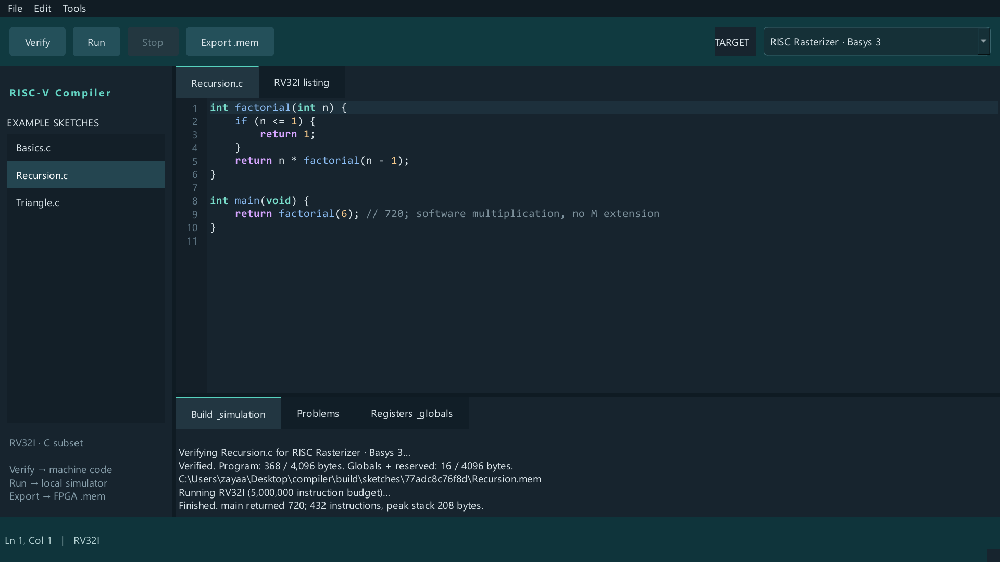
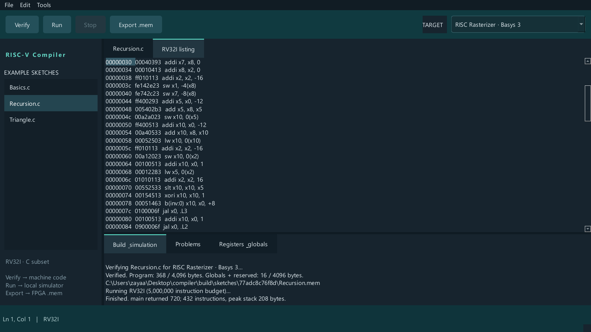
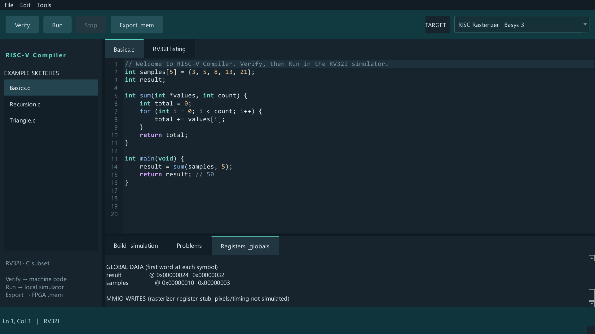
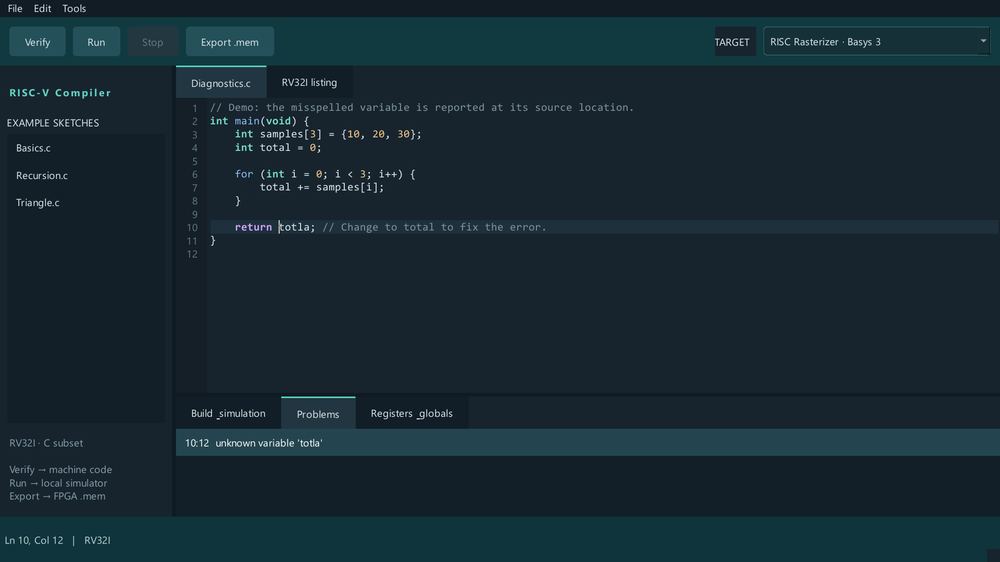

THE COMPILATION PATH
Turning source into machine code
The compiler handles the full path from source text to executable instruction words. A lexer and recursive-descent parser build an abstract syntax tree. Typed constant evaluation, scoped symbol tables, and type checking lead into register allocation, stack-frame construction, and assembly generation.
A built-in assembler encodes instructions into relocatable RVO1 objects. The linker lays out sections, resolves symbols, and patches relocations to produce a reset image, without LLVM or an external RISC-V cross-toolchain. The final listing exposes each instruction's address, encoded word, and assembly representation.
- C source →Tokenize and parse expressions, declarations, and functions.
- Assembly →Check types and scopes, allocate expression registers, and generate assembly.
- Linked RV32I imageAssemble RVO1 objects, resolve symbols, and apply relocations.
A FOCUSED C SUBSET
Supporting real program structure
The language supports 32-bit signed and unsigned integers, signed characters, pointers, volatile accesses, and fixed-size one-dimensional arrays. Programs can use globals, block-scoped locals, conditionals, loops, and recursive function calls.
Arithmetic, bitwise operations, pointer arithmetic, and short-circuit Boolean expressions are supported. This example computes 6! using recursion and software multiplication on the base integer instruction set.
int factorial(int n) {
if (n <= 1) {
return 1;
}
return n * factorial(n - 1);
}
int main(void) {
return factorial(6);
}

The current compiler processes one translation unit and has no standard library. Preprocessing, floating point, structs, and dynamic allocation are outside the current subset. Unsupported constructs produce source diagnostics.
TARGETING THE BASE ISA
Making a self-contained reset image
The backend uses RV32I instructions only, lowering multiplication and signed or
unsigned division into software loops. Calls pass up to eight arguments in
a0–a7, return in a0, preserve
s0–s11 and ra, and align the stack to 16 bytes at call boundaries.
Startup initializes the stack pointer, zeroes global storage, applies global
initializers, and calls the entry function before parking in a halt loop.
A greedy allocator keeps expression temporaries in s1–s11
and spills to the stack when the register pool is exhausted. Locals remain in
stack slots; this is expression register allocation rather than global optimization.
| Output | Purpose |
|---|---|
.s | Generated assembly accepted by the built-in assembler. |
.rvo | Relocatable RVO1 object containing symbols and relocations. |
.mem | Hexadecimal instruction words for FPGA memory initialization with $readmemh. |
.bin | Raw little-endian instruction bytes. |
.asm | Instruction addresses, encoded words, and a readable listing. |
.map.json | Entry and halt addresses, memory sizes, and code/data symbols. |


ASSEMBLER & LINKER
Calling a separately assembled library
The toolchain can compile one C firmware object and link it with assembly
libraries. In the linked example, C evaluates 4 + twice(19) while
an assembly function doubles its argument. The linker resolves the external
function reference and patches the call; execution returns 42.
rasterc examples/linked/main.c --emit-object -o build/linked/main
rasterc --assemble examples/linked/twice.s -o build/linked/twice
rasterc --link build/linked/main.rvo build/linked/twice.rvo -o build/linked/firmwareThe assembler supports RV32I instructions, register aliases, labels, pseudo-instructions, and text/data directives. Six relocation kinds cover absolute addresses, high and low address parts, jumps, and branches. The linker rejects duplicate exports, undefined symbols, memory overflow, and invalid relocation ranges.
RVO1 is a custom object format. Each C object includes startup and absolute global
storage, so multiple C translation units are not yet supported. Library linking
uses the CLI; the IDE builds individual C files. Linked assembly data also produces
.data.bin and .data.mem images for initializing data RAM.
THE DESKTOP WORKFLOW
User GUI & IDE
The PySide6 IDE brings the compiler, editor, and simulator into one workflow. The editor provides syntax highlighting, line numbers, automatic indentation, find, and unsaved-change protection. Clicking a diagnostic jumps to its source line and column.
Verify · Ctrl+R
Save and compile a sketch, then report instruction and data memory usage.
Run · F5
Execute locally and inspect the return value, registers, globals, and the instruction listing.
Export .mem
Copy all six build artifacts, including assembly and the relocatable object.
Compilation runs through QProcess, while simulation advances in
timer-driven batches to keep the interface responsive. Stop interrupts either
operation. Board profiles select the Basys 3 memory limits or a larger simulation target.


THE FPGA TARGET
Exporting for the custom processor
The default target matches the CPU
rasterizer project: a reset address of zero, 1,024 instruction words, and
4,096 bytes of data RAM. The generated memory image can be selected as
INSTRUCTION_INIT_FILE in Vivado.
Generated firmware has been validated in Vivado simulation against the reference CPU and data-memory RTL. Hardware upload transport and Arduino APIs are future extensions; the current workflow exports files for integration with the hardware project.
Support for more advanced microcontroller ecosystems is planned for future releases.
CHECKING EXECUTED BEHAVIOR
Checking firmware against the interpreter and RTL
The recorded October 20, 2026 validation run passed 20 compiler tests, 8 toolchain tests, 5 IDE tests, and 10 RTL firmware cases using Vivado Simulator v2026.1. The RTL report records passing results for all ten firmware cases.
Errors stay connected to the source. In this example, a misspelled variable is reported with its line and column, and selecting the diagnostic highlights the location.


The compiler test suite executes generated machine code in an independent instruction interpreter, checking program results alongside instruction generation.
- Language and arithmetic: arrays, pointers, recursion, and randomized signed/unsigned multiplication and division edge cases.
- Execution and memory: calling convention and stack restoration, register allocation and spills, memory limits, and source diagnostics.
- Assembler and linker: instruction encodings, assembly round trips, cross-object calls, all six relocation kinds, symbol errors, and range checks.
- IDE integration: offscreen GUI tests exercise asynchronous builds, source navigation, simulation cancellation, and target changes.
For each RTL case, the harness checks the expected return value, all 32 final registers, all 4,096 bytes of final RAM, and the executed instruction count against the independent Python interpreter. Cases include recursion, pointers, division, byte memory, control flow, eight arguments, register spills, and a separately assembled library call. CPU faults and timeouts fail validation.
The simulator detects stack/global collisions, misaligned accesses, unknown opcodes, and unmapped memory. The IDE enforces a five-million-instruction execution budget. RTL validation covers the reference CPU and data memory; rasterizer behavior, full SoC integration, and execution on a physical FPGA remain outside that scope.